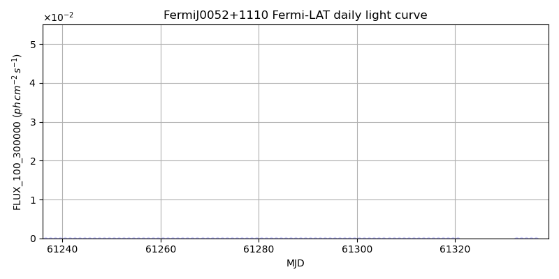
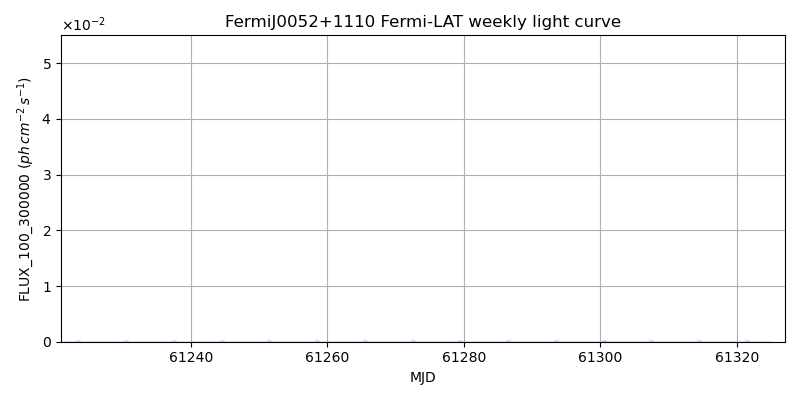
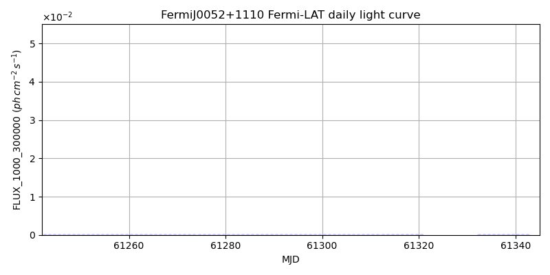
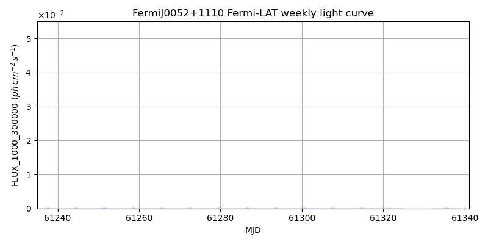

LAT Lightcurve site: https://fermi.gsfc.nasa.gov/ssc/data/access/lat/msl_lc/source/Fermi_J0052p1110
NED: Query
Time of last update of this page: UT: 2026-10-17 15:11 (MJD: 61330.633)
| Property | Value |
|---|---|
| R.A. | 0:52:21.60 |
| Dec. | 11:09:36.0 |
| z | 0.000 |
| 3FGL SpectrumType | |
| 3FGL PL Index | -1.00 |
| 3FGL Flux_100_300000 | -1.00e+00 |
| 3FGL Flux_1000_300000 | -1.00e+00 |
| 3FGL Flux >200 GeV | -1.00e+00 |
| 3FGL Extrap. Crab >200 GeV | -1.00 |
| 3FGL Flux After EBL Absorption >200GeV | -1.00e+00 |
| 3FGL EBL Crab Fraction >200GeV | -1.00 |

| MJD | dMJD | Flux | dFlux | Frac3FGL | FracCrab>200GeV | EBLFracCrab>200GeV |
|---|---|---|---|---|---|---|
| 61316.50 | 0.50 | 9.85e-08 | 0.00e+00 | 0.00 | 0.00 | -0.00 |
| 61317.50 | 0.50 | 2.25e-07 | 0.00e+00 | 0.00 | 0.00 | -0.00 |
| 61318.50 | 0.50 | 2.34e-07 | 0.00e+00 | 0.00 | 0.00 | -0.00 |
| 61319.50 | 0.50 | 1.72e-07 | 0.00e+00 | 0.00 | 0.00 | -0.00 |
| 61320.50 | 0.50 | 3.00e-07 | 0.00e+00 | 0.00 | 0.00 | -0.00 |

| MJD | dMJD | Flux | dFlux | Frac3FGL | FracCrab>200GeV | EBLFracCrab>200GeV |
|---|---|---|---|---|---|---|
| 61293.50 | 3.50 | 3.14e-08 | 0.00e+00 | 0.00 | 0.00 | -0.00 |
| 61300.50 | 3.50 | 1.50e-07 | 0.00e+00 | 0.00 | 0.00 | -0.00 |
| 61307.50 | 3.50 | 3.95e-08 | 0.00e+00 | 0.00 | 0.00 | -0.00 |
| 61314.50 | 3.50 | 1.06e-07 | 0.00e+00 | 0.00 | 0.00 | -0.00 |
| 61321.50 | 3.50 | 1.13e-07 | 0.00e+00 | 0.00 | 0.00 | -0.00 |

| MJD | dMJD | Flux | dFlux | Frac3FGL | FracCrab>200GeV | EBLFracCrab>200GeV |
|---|---|---|---|---|---|---|
| 61316.50 | 0.50 | 2.26e-08 | 0.00e+00 | 0.00 | 0.00 | -0.00 |
| 61317.50 | 0.50 | 1.94e-08 | 0.00e+00 | 0.00 | 0.00 | -0.00 |
| 61318.50 | 0.50 | 1.97e-08 | 0.00e+00 | 0.00 | 0.00 | -0.00 |
| 61319.50 | 0.50 | 8.43e-08 | 0.00e+00 | 0.00 | 0.00 | -0.00 |
| 61320.50 | 0.50 | 7.77e-08 | 0.00e+00 | 0.00 | 0.00 | -0.00 |

| MJD | dMJD | Flux | dFlux | Frac3FGL | FracCrab>200GeV | EBLFracCrab>200GeV |
|---|---|---|---|---|---|---|
| 61293.50 | 3.50 | 2.71e-09 | 0.00e+00 | 0.00 | 0.00 | -0.00 |
| 61300.50 | 3.50 | 9.31e-09 | 0.00e+00 | 0.00 | 0.00 | -0.00 |
| 61307.50 | 3.50 | 2.95e-09 | 0.00e+00 | 0.00 | 0.00 | -0.00 |
| 61314.50 | 3.50 | 3.34e-09 | 0.00e+00 | 0.00 | 0.00 | -0.00 |
| 61321.50 | 3.50 | 3.41e-08 | 0.00e+00 | 0.00 | 0.00 | -0.00 |
--------------------------------------------------------- Using user-supplied coords: 0:52:21.60 11:09:36.0 2000 --------------------------------------------------------- FLWO UT night of: 2026-10-18 Local Sid. @ Midnight: 01:23 Sunset (-15.0) (local, UT): 18:56 01:56 Sunrise (-15.0) (local, UT): 05:22 12:22 Moonrise (local, UT): Moonset (local, UT): 22:59 05:59 Moon phase: 0.47 --------------------------------------------------------- AzTime LSID UT Obj_el Obj_az Mn_el Mn_az Sep. --------------------------------------------------------- 18:56 20:18 01:56 23.9 91.2 30.5 195.3 89.2 19:26 20:48 02:26 30.3 95.4 28.5 202.5 89.0 19:56 21:18 02:56 36.7 99.9 25.9 209.3 88.9 20:26 21:48 03:26 42.9 105.0 22.6 215.6 88.7 20:56 22:19 03:56 49.0 111.0 18.8 221.3 88.5 21:26 22:49 04:26 54.8 118.3 14.5 226.6 88.3 21:56 23:19 04:56 60.2 127.8 9.9 231.4 88.1 22:26 23:49 05:26 64.8 140.3 5.0 235.7 87.9 22:56 00:19 05:56 68.1 156.8 0.2 239.8 87.7 23:26 00:49 06:26 69.6 177.0 -5.5 243.5 87.4 23:56 01:19 06:56 68.8 197.7 -11.3 247.0 87.2 00:26 01:49 07:26 65.9 215.4 -17.0 250.4 86.9 00:56 02:19 07:56 61.6 229.0 -22.8 253.6 86.7 01:26 02:49 08:26 56.4 239.2 -28.7 256.7 86.4 01:56 03:19 08:56 50.7 247.1 -34.7 259.8 86.1 02:26 03:49 09:26 44.7 253.4 -40.7 263.0 85.8 02:56 04:20 09:56 38.5 258.7 -46.8 266.4 85.5 03:26 04:50 10:26 32.1 263.4 -52.8 270.1 85.2 03:56 05:20 10:56 25.8 267.6 -58.9 274.3 84.8 04:26 05:50 11:26 19.4 271.6 -64.9 279.6 84.5 04:56 06:20 11:56 13.0 275.4 -70.8 287.0 84.2 05:22 06:46 12:22 7.6 278.7 -75.7 297.1 83.9 --------------------------------------------------------- Dark hours >55 deg.: 2.57 srcstart (UT): 2026-10-18 05:59 srcend (UT): 2026-10-18 08:33